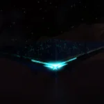
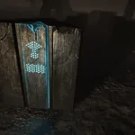
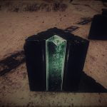
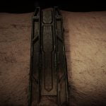
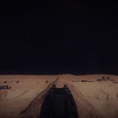
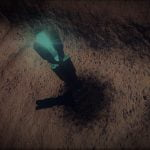
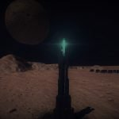

The Guardians were a technologically advanced humanoid race that colonized an area of the Orion arm before humans mastered interstellar travel. They were a strongly communal society arranged in co-operative city-states. They used a system of monoliths to share information between settlements many light-years apart.
The Guardians had a strong spiritual connection to their environment, and carefully managed their impact on the world around them, maintaining a connection to their pack-hunter origins. They were highly adept at genetic manipulation and used this to modify both themselves, and their environment to improve quality of life, or to wage war.
Although peaceful for the majority of their history, technological disparity gave rise to two major conflicts. The second of these was an ideological and religious war fought in response to the increasing technological advancements facilitated by artificial intelligence.
Sadly the escalating automation of this war destroyed the habitat and majority of the population of the Guardians’ home world. Only now are humans discovering the remains of this once great civilization, and there are many questions left unanswered.

Decrypting the Guardian Logs Lore Locations - This is a set of locations for the different lore in the Decrypting the Guardian Logs mission. Combinations may also occur at other sites but if a Lore entry requires (for instance) Orb + Relic then you can scan that at any instance of the same site layout for the same lore. There can...
Guardians Codex - The Guardian Codex data is a set of 28 logs (with audio) obtained via the second Ram Tah mission 'Decrypting the Guardian Logs'.

Guardians Data Biology - A collection of Biological Data concerning the Guardians and decoded by Ram Tah, that was found at Ancient Ruins
Guardians Data History - A collection of Historical Data concerning the Guardians and decoded by Ram Tah, that was found at Ancient Ruins
Guardians Data Technology - A collection of Technological Data concerning the Guardians and decoded by Ram Tah, that was found at Ancient Ruins
Guardians Data Culture - A collection of Cultural Data concerning the Guardians and decoded by Ram Tah, that was found at Ancient RuinsThere is a mission available in-game to obtain the lore information from various ruin sites see the Ram Tah Mission Guide.
There is a guide to finding new Guardian Ruins.
New Post 2.3 Ruin tools:
Tools in Development (Partial use available, still WIP)